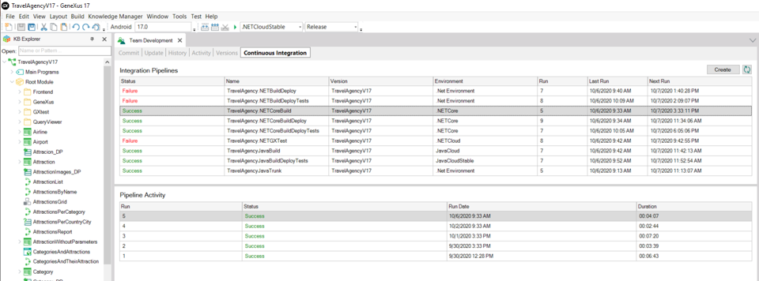
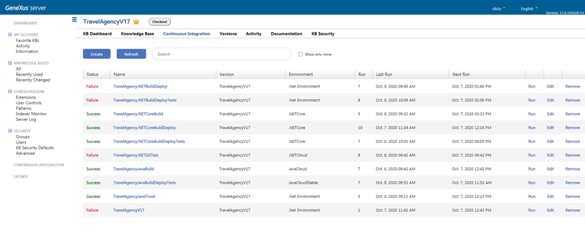
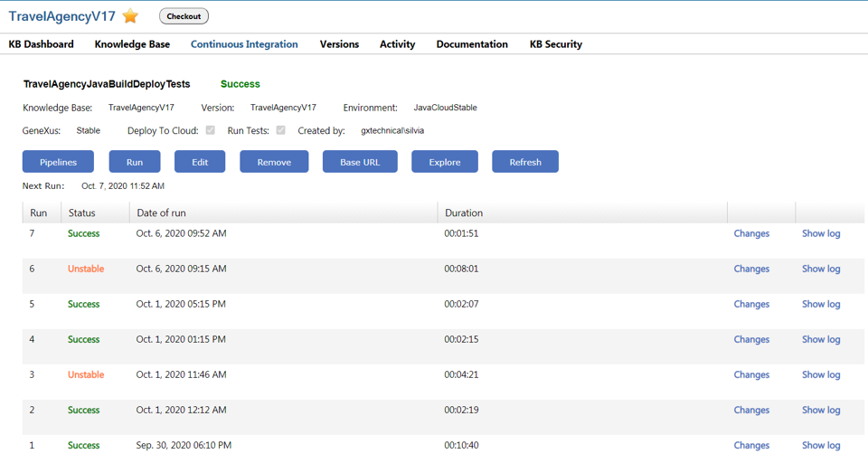

As of GeneXus 17, it is possible to create and monitor continuous integration processes from the GeneXus IDE and the GeneXus Server Console. In this way, it is very easy to set from GeneXus that for a certain KB in GeneXus Server, a process is created that creates its own working KB. Also, that it periodically checks if there have been new commits, in which case it can update the local KB, run a build, do Deploy to Cloud of what is generated, and run tests contained in the KB. GeneXus Server solves all communication and coordination with a Jenkins server, which in turn is in charge of executing the processes and reporting their results. Developers can access most of the information and tasks directly in GeneXus and GeneXus Server or access Jenkins for more details or more advanced configurations. In order to enable this feature some configurations must be made, please refer to document: How to configure GeneXus Server for Continuous Integration Continuous Integration in GeneXusIn the GeneXus IDE, within the Knowledge Manager Team Development window, a new tab called Continuous Integration is shown.  From here it is possible to create new pipelines and also monitor the execution of the defined pipelines. Continuous Integration in GeneXus Server consoleIn the GeneXus Server console, a new option is added to the menu called Continuous Integration\Pipelines where you can see all the defined pipelines and also create new ones. Also at the KB level, it is possible to access the pipelines defined for that KB.  By clicking on a pipeline it is possible to see the number of times it was executed and its status.  See Also
|
| Backlinks | |
| Category:Continuous Integration | Toc:DevOps in GeneXus |
| GeneXus Server 17 Release Notes |